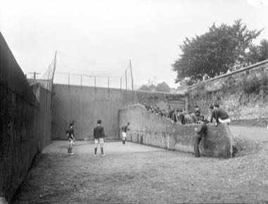
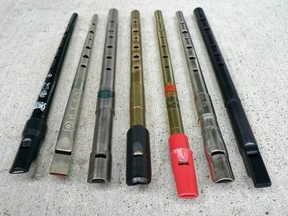

Home / Living Traditions / Celtic and Atlantic Europe
Encyclopedia ID 1464
Irish Handball
Also known as Liathróid láimhe · Alley Handball

Strike a small rubber ball with your palm against a wall, alternating with your opponent so each shot must hit the front wall before a second bounce.
Heritage note
Part of the living heritage of Ireland.
Origins
A living tradition passed from person to person; it is not tied to a single dated origin. It belongs to the cultural world of Celtic and Atlantic Europe.
Sources
Related entries

Celtic knot weave
Ireland +1 · Crafts and makingPlay preview · in the Textile Crafts of the World app
Tartan Sett Weaving
United Kingdom +1 · Crafts and makingPlay preview · in the Textile Crafts of the World app


Hurdy-gurdy
France · Musical instruments
Nordic Colourwork Knitting
United Kingdom +2 · Crafts and makingPlay preview · in the Textile Crafts of the World app
More from Ireland


Frisian Road Bowling
Ireland +2 · Dexterity and skill games

Road bowling
Ireland · Street and playground games